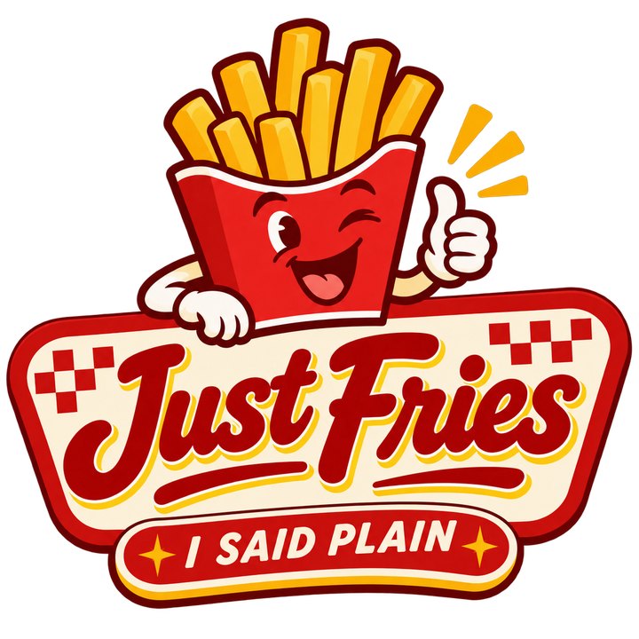

Not "who serves fries" — how is this exact item made, and how sure are we?
Demo with fictional menu data. Nothing here describes a real restaurant or kitchen.
What I want fries to be
Only what you set is checked. “No preference” is never held against an item.
Results
Loading the graph engine…